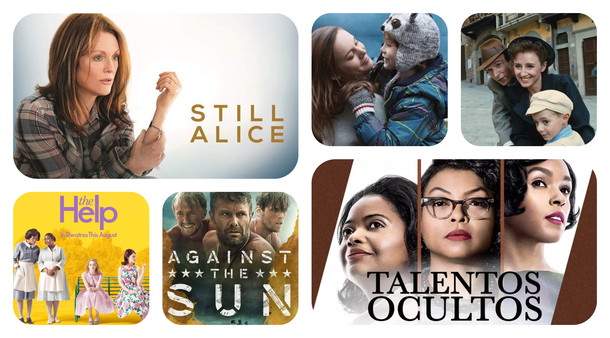

Para entrar en contexto, debemos empezar sabiendo que es realmente la palabra PELICULA y su significado.
Una película (del latín pellicula, diminutivo de pellis, «piel») es una serie de imágenes fijas que, cuando se proyectan en una pantalla de forma consecutiva en rápida sucesión, crean la ilusión óptica de imágenes en movimiento. Las imágenes individuales que componen una película se denominan fotogramas. Esta palabra también puede ser definida como una cinta de material sensible a la luz sobre la cual se imprimen las imágenes fotográficas o de cine.
Por lo general cuando queremos ver una película con nuestra familia, no encontramos algo que nos guste o nos llame la atención, algunas de ellas no nos dejan una enseñanza con la cual nos sintamos plenamente identificados, quedando con un sinsabor. Aquí les traemos una selección de las mejores seis películas que te harán sacar una lágrima. Para los fieles amantes del amor tenemos "la vida es bella", que es una pelicula ambientada en la segunda guerra mundial donde un padre hace lo posible por recuperar a su amada luego de que fueran separados y ubicados a diferentes campos de concentración. Tambien filmes como "La habitación" donde una joven pasa toda su vida encerrada y torturada por su violador, luchando por su libertad y la de su hijo nacido en esta situación. "Still Alice" donde una maestra que ama su profesión y es entregada a ella, va perdiendo su memoria hasta el punto de no reconocer a su familia ni a ella misma. "Against the Sun" que se basa en el naufragio que sufren tres soldados en aguas enemigas, donde se describe como fueron esos momentos angustiosos y solitarios donde debieron aguantar hambre, sequia y los cambios bruscos de clima hasta ser encontrados.
También se destacan los filmes donde la discriminación a personas de color se presenta y más sobrevalorando el papel de la mujer en los filmes "Historias Cruzadas" donde mujeres dedicadas a labores domesticas encuentran en una mujer blanca la forma de ser libres y no recibir maltratos por de parte de sus jefes. En "Talentos Ocultos" podemos observar como tres ingeniosas mujeres descubren un código con el cual el hombre llega a la luna por primera vez. A continuación, conoceremos más sobre estas peliculas que de una u otra formas te dejaran un valioso mensaje.